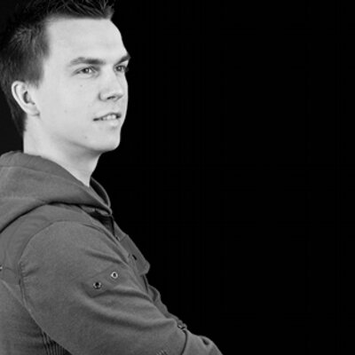

Curriculum vitae of Iain van der Wiel
About me
Hi! My name is Iain van der Wiel, 34 years old and I live in Oosterhout, The Netherlands.
I am married to Margot since 2014 and I have one daughter, Esmée.
Currently I am a senior front end web developer at Frontmen in Eindhoven, The Netherlands. I'm very passionate about the web, the possibilities it brings and making it accessible for anyone, anywhere.
Professional experience
-
Senior Front end web developer at Frontmen in Eindhoven, from November 2018 til present.
Worked for the following client(s):
-
VONQ in Rotterdam - from November 2018 til present. Continued development of a React
application where clients can order job marketing campaigns and view campaign
analytics.
Stack: React, Redux, React Router, Recharts, Webpack, Jest, Enzyme, Docker
-
VONQ in Rotterdam - from November 2018 til present. Continued development of a React
application where clients can order job marketing campaigns and view campaign
analytics.
-
Front end web developer at E-sites in Breda, from March 2013 til October 2018. Promoted
to Senior front end web developer in 2016
Stack: PHP, Symfony, Twig, React, Redux, React Router, Gatsby, GraphQL, Jest, Mocha, Chai, Istanbul, Angular.js, jQuery -
Front end web developer at Estate in Tilburg, from March 2011 to February 2013
Stack: ASP.Net, Sitecore, Sitefinity, jQuery -
Web developer and designer at Tirato in Drunen, from August 2008 to February 2011
Stack: PHP, Silverstripe, WordPress, jQuery - DTP and web design at Reach Strategische Communcatie, from February 2008 to August 2008
Courses and trainings
- CSS Grid course by Wes Bos, in 2018
- ES6.io course by Wes Bos, in 2017
- Learn Node course by Wes Bos, in 2017
- Scrum Master Essentials training by Agile Works, in 2017
- Workshop ES2015+ from Fronteers, in 2017
- React for beginners course by Wes Bos, in 2016
- Angular.js v1.5 course from CodeCademy, in 2016
- Drupal 7 training by Merge, in 2014
- Effective communication by MXF Bedrijfspsychologie, in 2010
Miscellaneous experience
- HTML5, senior level
- CSS3, Sass and LESS, senior level
- JavaScript, senior level
- jQuery, senior level
- Twig, Handlebars and Mustache template engines, senior level
- Gulp.js task runner, senior level
- React.js, senior level
- SVG, intermediate level
- Kunstmaan (Symfony based) CMS, intermediate level
- WordPress, intermediate level
- Node.js, intermediate level
- Angular.js, beginner level
- Angular 2+, beginner level
- Symfony framework, beginner level
Education
- MBO Multimedia and Design at ROC Zoomvliet College Roosendaal, from 2004 to 2007. Acquired diploma.
- HBO ICT at Hogeschool 's Hertogenbosch, from 2003 to 2004.
- HBO ICT at Hogeschool Breda, from 2002 to 2003.
- HAVO Natuur & Techniek at KSE Etten-Leur, from 1997 to 2002